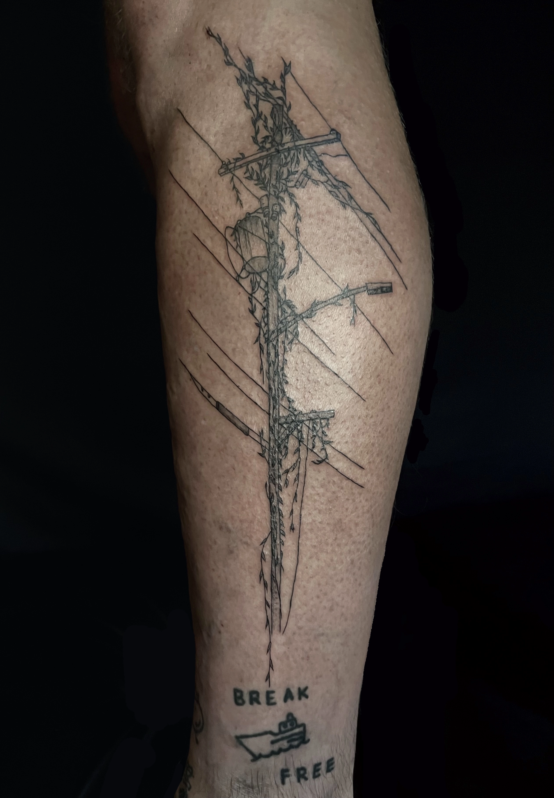
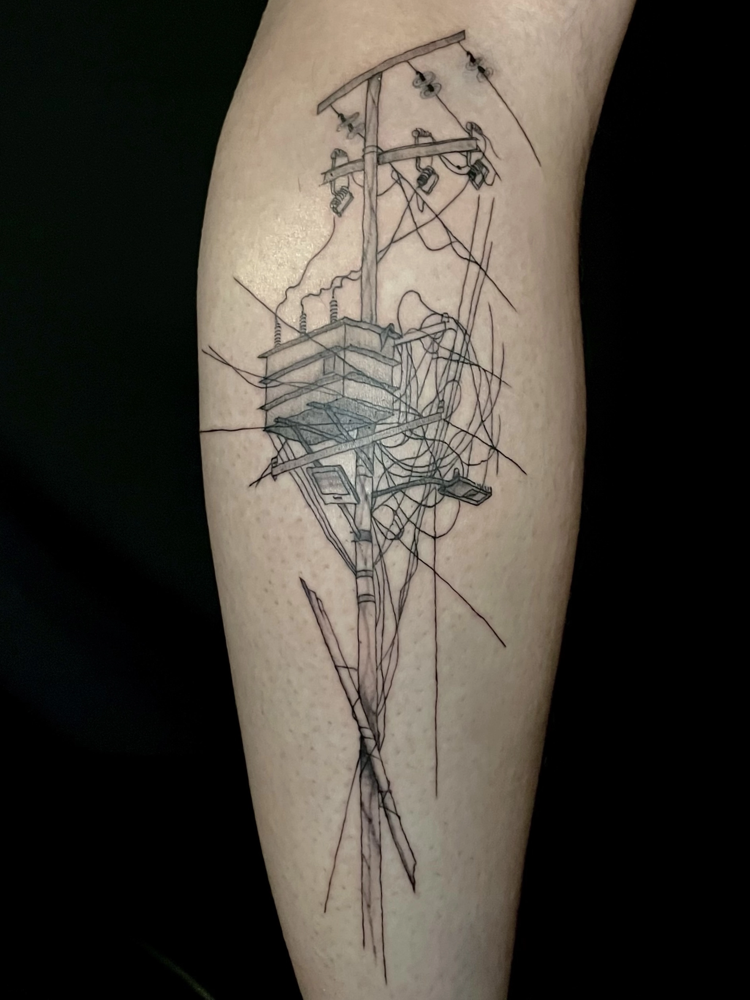
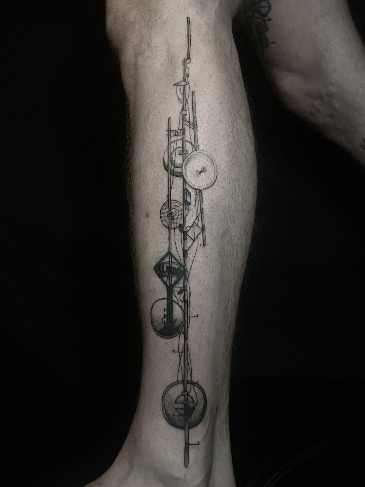
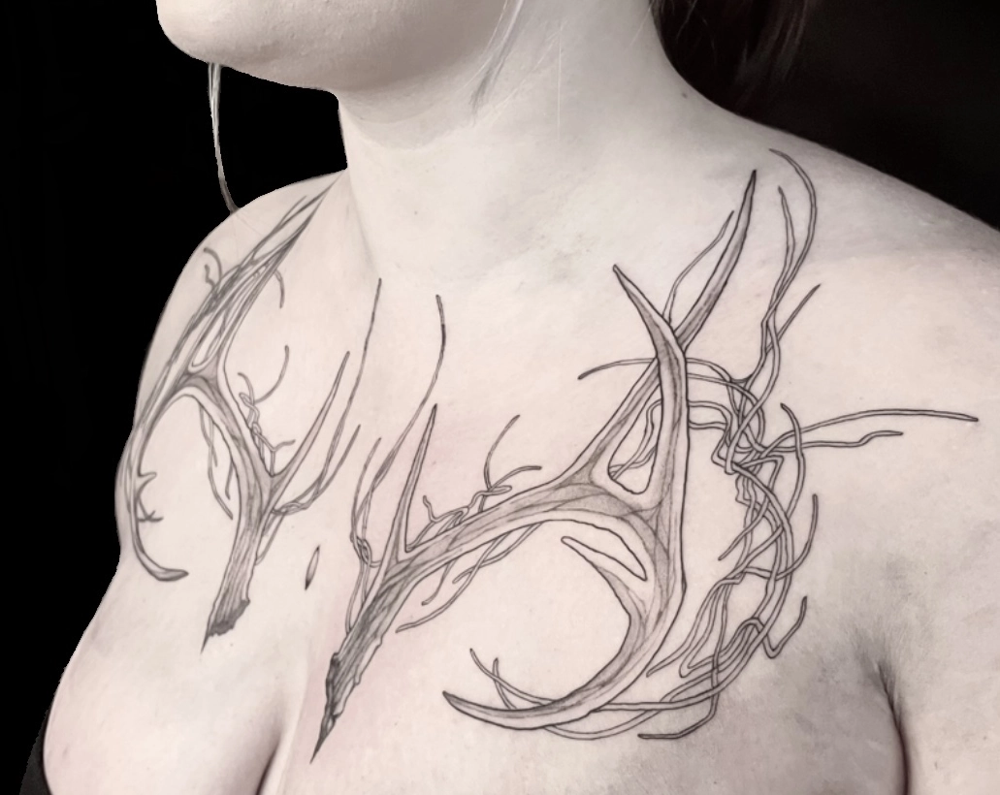
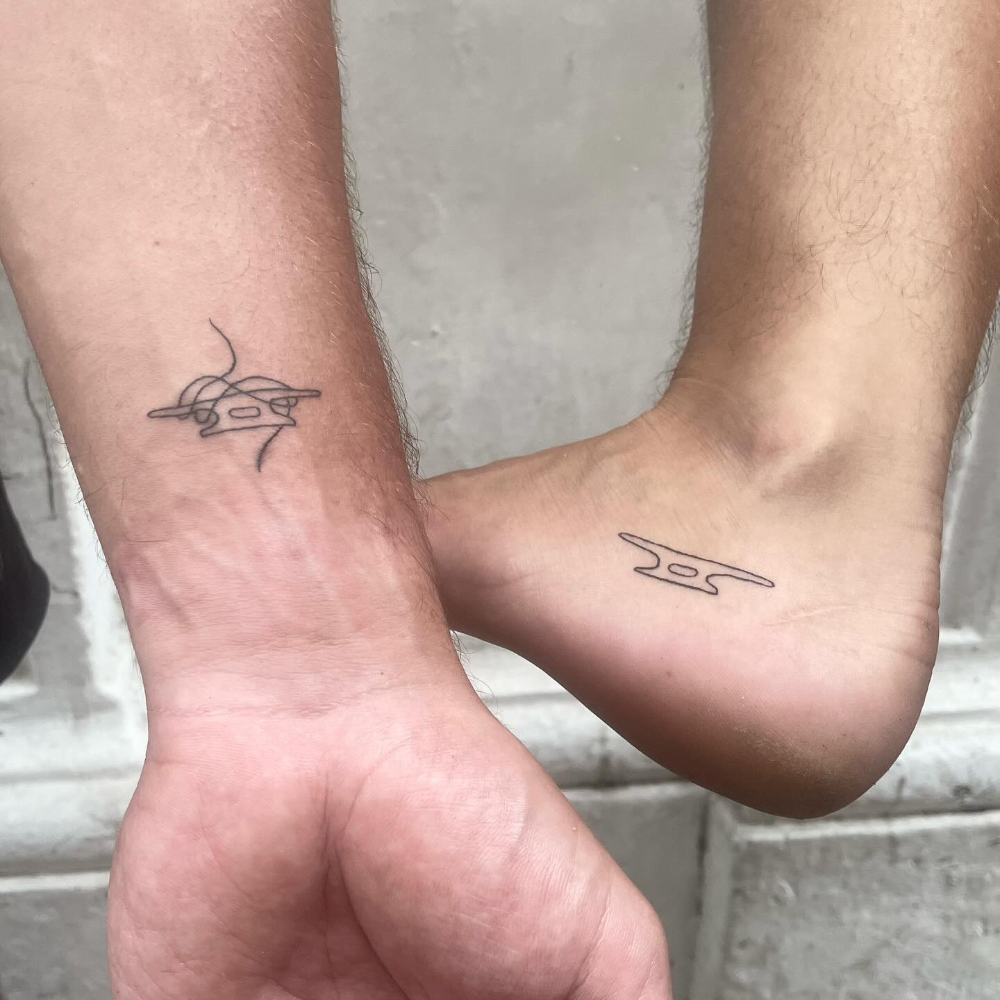
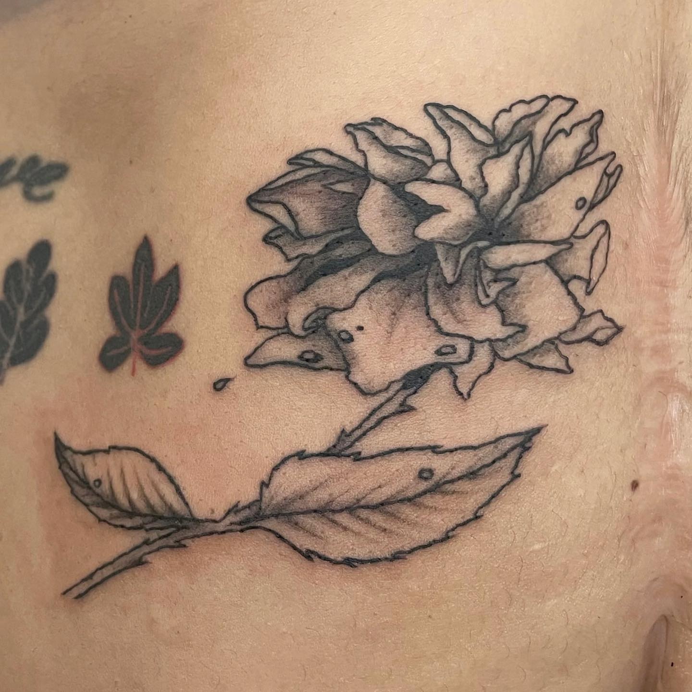

tattoo - custom
I've been tattooing since 2022. Here are some of my favorite tattoos I've made custom for clients and friends.
I have a page for my walk-in shop tattoos here.
Soon I will have a page for my flash!
If you are interested in booking a tattoo with me in New Orleans, send an email to :: lake at lakesleep dot ing. Please include idea, size, and placement in your message.


for gabu


for misha / for ava


for becca / for L


for gwyn / on self


for miriam / for andrea


for dom / for gwyn


for burd / for koo


for flex, fresh vs healed


for bojay / for eli


for destini


for kizza, fresh vs healed


for avenue / for kizza


for dru / for spaci


for ethan, right and left sides of his neck


for aurora / for sav


for leo and lola


cicadas fresh, rose healed 9 months / rose for tong


for ananda

more?